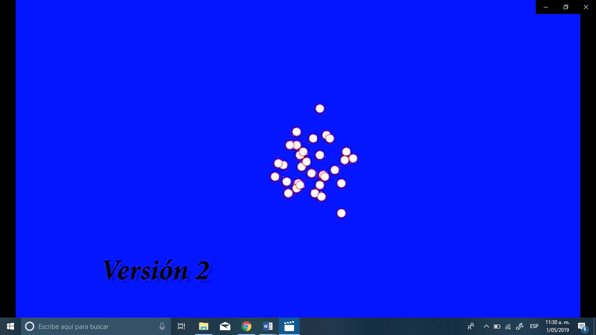

Perspectiva general OpenGL Primer acercamiento a movimiento aleatorio de partículas. Interfaz gráfica limitada, movimiento sesgado a un aleatorio parcializado. Leer mas
Fase 2  JavaScript y paper.js Movimiento aleatorio de varias partículas basado en 4 direcciones(cardinales). El sistema implementado no permite un movimiento fluido y da la sensación de vibración. Movimiento aleatorio de varias partículas basado en vector direccional. Primera implementación de obstáculos. Fallos en la acción después del contacto con el obstáculo. Fluidez en el movimiento no es completa. Implementación de cronómetro y ciclos de actividad. Exploración durante 8 segundos e inactividad durante 8 más. Las partículas terminan la exploración y reaparecen en el punto de origen, falta implementar el regreso. Leer mas
Fase 3 Unity Segunda implementación de obstáculos, obstáculo que se debe rodear. Prueba con varios orígenes. La implementación de la colisión no es perfecta. Prueba con varios orígenes y obstáculo de rodear. Implementación de obstáculo tipo 2, disminuir la velocidad de la partícula cuando lo atraviese. Reconocimiento del camino y distancia recorrida por cada partícula. Visualización gráfica. Dejar señales de encuentro con obstáculo Las señales representantes del encuentro se deben conectar a la base de datos. Leer mas